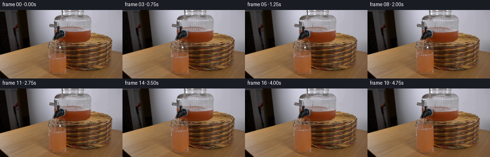
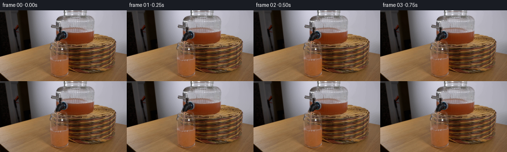
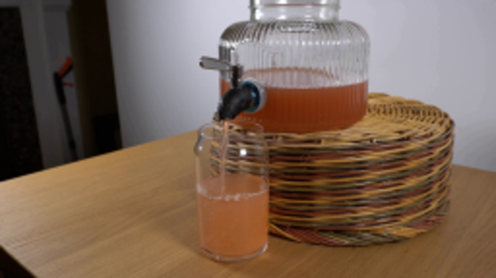
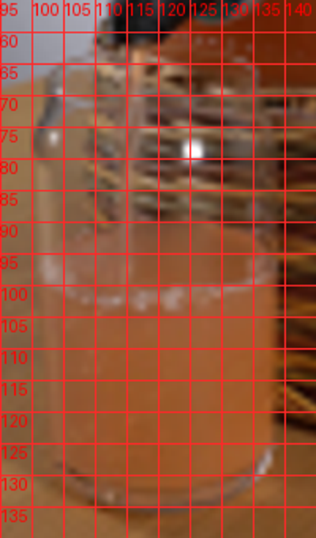
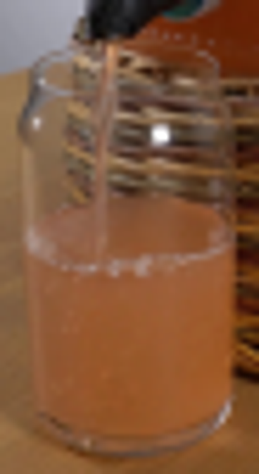
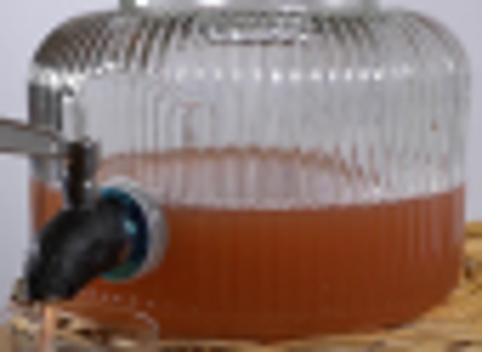
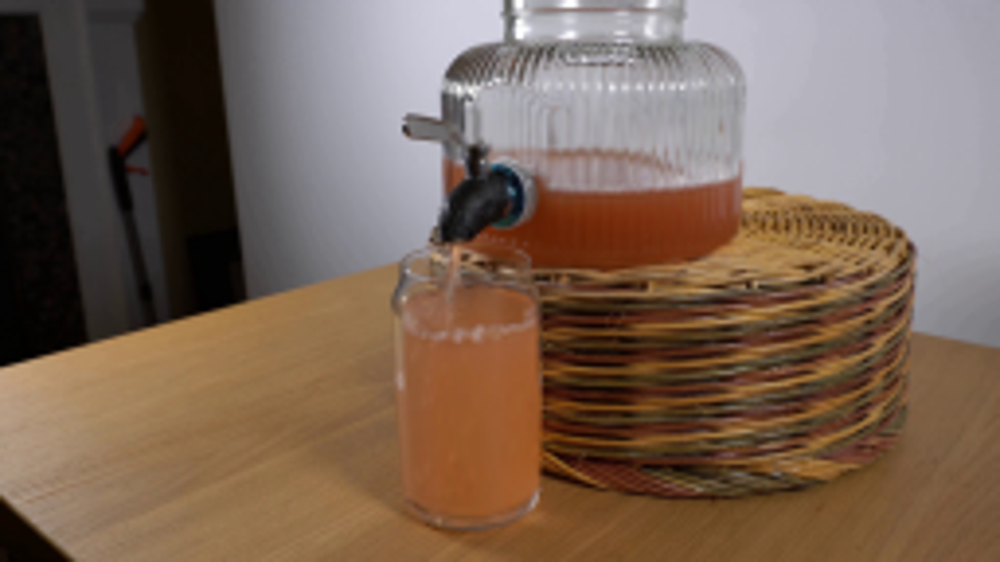

CODING AGENTS AS PIXEL WORLD MODELS
traex/GPT-6.1-Sol · 0072
点击播放 · 原生 RGB 像素
逐轮保存的候选
回放视频、检查图与代码变化。
每份候选均可单独播放。实际图片检查记录在下方工具轨迹中。
候选 01播放与检查图
点击播放 · 原生 RGB 像素


展开代码变化
--- 上一保存版本
+++ 本次保存版本
@@ -0,0 +1,114 @@
+from pathlib import Path
+import numpy as np
+from PIL import Image, ImageDraw, ImageFilter
+from scipy.ndimage import map_coordinates, gaussian_filter
+import artifact_io
+
+ROOT = Path(__file__).resolve().parent
+S = 4
+H,W = 144*S,256*S
+original = np.array(Image.open(ROOT/'first_frame.png').convert('RGB'))
+base = np.array(Image.fromarray(original).resize((W,H),Image.Resampling.BICUBIC)).astype(np.float32)
+y,x = np.mgrid[:H,:W].astype(np.float32)
+x=(x+.5)/S-.5; y=(y+.5)/S-.5
+
+def smooth(a,b,v):
+ z=np.clip((v-a)/(b-a),0,1)
+ return z*z*(3-2*z)
+
+def sample(img, xx, yy):
+ coords=np.array([(yy+.5)*S-.5,(xx+.5)*S-.5])
+ return np.stack([map_coordinates(img[:,:,c],coords,order=1,mode='nearest') for c in range(3)],axis=-1)
+
+def render(n):
+ if n==0:return original.copy()
+ t=n/4
+ # The open spigot delivers a steady narrow jet. The receiving level rises
+ # at the flow rate, with a slightly declining head in the large reservoir.
+ rise=3.65*t-.032*t*t
+ drop=rise*.204
+ arr=base.copy()
+
+ # Translate the meniscus in the dispenser, retaining the photographed
+ # curved surface and ribbed glass, with no motion of the vessel or tap.
+ jar_mask=smooth(113.3,115.6,x)*(1-smooth(188.0,189.8,x))
+ jar_mask*=smooth(26,31,y)*(1-smooth(59,65,y))
+ hardware=(1-smooth(136.5,141.5,x))*smooth(36,40,y)*(1-smooth(61,64,y))
+ jar_mask*=1-hardware
+ weight=smooth(28,38,y)*(1-smooth(50,65,y))
+ # Warping a surface-local slab lets the clear portion extend downwards.
+ shifted=sample(base,x,y-drop*weight)
+ arr=arr*(1-jar_mask[:,:,None])+shifted*jar_mask[:,:,None]
+
+ # The original translucent liquid, glass scattering, and meniscus are
+ # transported upward inside the stationary walls of the receiving glass.
+ cx=120.05; rx=17.35
+ u=(x-cx)/rx
+ root=np.sqrt(np.maximum(0,1-u*u))
+ back=94.3-5.3*root
+ front=94.3+6.0*root
+ bottom=128.8+4.1*root
+ # Local capillary waves travel away from the impact point.
+ wave=(.22*np.sin(1.35*(x-113.8)-t*9.3)+.12*np.sin((x-115)*.8+t*6.4))
+ wave*=np.exp(-((x-116)/18)**2)*min(1,t*2)
+ upper=back-rise+wave
+ liquid_mask=(1-smooth(rx-.6,rx+.15,np.abs(x-cx)))
+ liquid_mask*=smooth(-.25,.45,y-upper)*(1-smooth(-.45,.35,y-bottom))
+ # Preserve the depth of the surface lens while stretching only the bulk.
+ surf_front=front-rise+wave
+ transition=np.maximum(bottom-surf_front,1)
+ q=np.clip((y-surf_front)/transition,0,1)
+ displacement=rise*(1-smooth(0,1,q))
+ source_y=y+displacement-wave*(1-smooth(0,.15,q))
+ filled=sample(base,x,source_y)
+ # Color of the growing mixture changes very mildly as juice is added.
+ bulk=smooth(2,6,y-surf_front)
+ enrich=(1-np.exp(-t/5))*.04*bulk
+ juice=np.array([161,91,47],np.float32)
+ filled=filled*(1-enrich[:,:,None])+juice*enrich[:,:,None]
+ arr=arr*(1-liquid_mask[:,:,None])+filled*liquid_mask[:,:,None]
+
+ # Renew the subpixel jet texture in the air. Its average location is fixed
+ # by the outlet, not by camera or vessel movement.
+ jet_x=115.2-.042*(y-62)
+ air=smooth(61.7,64,y)*(1-smooth(-.6,.2,y-(94.0-rise)))
+ jm=(1-smooth(.7,1.65,np.abs(x-jet_x)))*air
+ jitter=.13*np.sin(y*1.95-t*17)+.08*np.sin(y*.64-t*8)
+ jet=sample(base,x+jitter,y)
+ shimmer=(1.4*np.sin(y*1.8-t*19)+.7*np.sin(y*.65-t*10))
+ jet+=shimmer[:,:,None]*np.array([1.,.9,.7])
+ arr=arr*(1-jm[:,:,None])+jet*jm[:,:,None]
+
+ # Tiny bubbles and weak concentric ripples at the stream's impact.
+ effect=Image.new('RGBA',(W,H),(0,0,0,0))
+ d=ImageDraw.Draw(effect)
+ impact_x=113.9
+ impact_y=94.0-rise
+ for k in range(3):
+ phase=(t*2.6+k*.34)%1
+ r=1+phase*6.4
+ ry=.24*r
+ alpha=int((1-phase)*24)
+ d.arc(((impact_x-r)*S,(impact_y-ry)*S,(impact_x+r)*S,(impact_y+ry)*S),15,168,fill=(195,160,117,alpha),width=1)
+ d.arc(((impact_x-r)*S,(impact_y-ry)*S,(impact_x+r)*S,(impact_y+ry)*S),195,350,fill=(102,65,42,alpha),width=1)
+ for k in range(13):
+ phase=(t*.85+k*.273)%1
+ bx=impact_x+(2.7+phase*6.1)*np.sin(k*2.4+t*.32)
+ by=impact_y+1.9+np.sin(k*3.3)*1.4
+ r=.17+.22*((k*17)%7)/6
+ a=int(26+22*(1-phase))
+ d.ellipse(((bx-r)*S,(by-r*.7)*S,(bx+r)*S,(by+r*.7)*S),fill=(215,185,147,a))
+ eff=np.array(effect).astype(np.float32)
+ ea=eff[:,:,3]/255*liquid_mask
+ arr=arr*(1-ea[:,:,None])+eff[:,:,:3]*ea[:,:,None]
+
+ # Retain the exact source outside the small active fluid regions.
+ out=np.array(Image.fromarray(np.uint8(np.clip(arr,0,255))).resize((256,144),Image.Resampling.LANCZOS))
+ active=(jar_mask+liquid_mask+jm)>0
+ active_low=np.array(Image.fromarray((active*255).astype(np.uint8)).resize((256,144),Image.Resampling.BOX))>0
+ # Guard the static photograph against resampling everywhere else.
+ out[~active_low]=original[~active_low]
+ return out
+
+frames=np.stack([render(n) for n in range(20)])
+artifact_io.save(frames,ROOT)
可观测工具轨迹
实际执行的命令与返回图片。
命令 1exit 0
/bin/bash -lc 'ls -la && cat prompt.txt && cat GENERATION_RULES.md'
命令 2exit 0
/bin/bash -lc "cat artifact_io.py && python - <<'PY'
from PIL import Image
im=Image.open('first_frame.png'); print(im.size); im.resize((1024,576)).save('.tmp/enlarged.png')
PY"命令 3exit 0
/bin/bash -lc "python - <<'PY'
from PIL import Image, ImageDraw
im=Image.open('first_frame.png').resize((1024,576)); d=ImageDraw.Draw(im)
for x in range(95,145,5):
d.line((x*4,55*4,x*4,140*4),fill=(255,40,40),width=1);d.text((x*4,55*4),str(x),fill='red')
for y in range(60,140,5):
d.line((95*4,y*4,145*4,y*4),fill=(255,40,40),width=1); d.text((95*4,y*4),str(y),fill='red')
im.crop((380,220,580,560)).resize((400,680)).save('.tmp/grid.png')
PY"命令 4exit 0
/bin/bash -lc "python - <<'PY'
from PIL import Image
im=Image.open('first_frame.png');im.crop((97,55,143,139)).resize((368,672)).save('.tmp/glass.png');im.crop((108,9,193,71)).resize((680,496)).save('.tmp/jar.png')
PY"命令 5exit 0
/bin/bash -lc "python - <<'PY'
import numpy, scipy, PIL
print('versions', numpy.__version__, scipy.__version__)
PY"命令 6exit 0
/bin/bash -lc "python - <<'PY'
from PIL import Image
import numpy as np
im=np.array(Image.open('first_frame.png'))
for xy in [(120,110),(130,118),(117,94),(120,92),(120,87),(120,96),(116,80),(113,99),(155,52),(160,43)]:
x,y=xy;print(xy,im[y,x])
PY"命令 7exit 0
/bin/bash -lc "cat > generate.py <<'PY'
from pathlib import Path
import numpy as np
from PIL import Image, ImageDraw, ImageFilter
from scipy.ndimage import map_coordinates, gaussian_filter
import artifact_io
ROOT = Path(__file__).resolve().parent
S = 4
H,W = 144*S,256*S
original = np.array(Image.open(ROOT/'first_frame.png').convert('RGB'))
base = np.array(Image.fromarray(original).resize((W,H),Image.Resampling.BICUBIC)).astype(np.float32)
y,x = np.mgrid[:H,:W].astype(np.float32)
x=(x+.5)/S-.5; y=(y+.5)/S-.5
def smooth(a,b,v):
z=np.clip((v-a)/(b-a),0,1)
return z*z*(3-2*z)
def sample(img, xx, yy):
coords=np.array([(yy+.5)*S-.5,(xx+.5)*S-.5])
return np.stack([map_coordinates(img[:,:,c],coords,order=1,mode='nearest') for c in range(3)],axis=-1)
def render(n):
if n==0:return original.copy()
t=n/4
# The open spigot delivers a steady narrow jet. The receiving level rises
# at the flow rate, with a slightly declining head in the large reservoir.
rise=3.65*t-.032*t*t
drop=rise*.204
arr=base.copy()
# Translate the meniscus in the dispenser, retaining the photographed
# curved surface and ribbed glass, with no motion of the vessel or tap.
jar_mask=smooth(113.3,115.6,x)*(1-smooth(188.0,189.8,x))
jar_mask*=smooth(26,31,y)*(1-smooth(59,65,y))
hardware=(1-smooth(136.5,141.5,x))*smooth(36,40,y)*(1-smooth(61,64,y))
jar_mask*=1-hardware
weight=smooth(28,38,y)*(1-smooth(50,65,y))
# Warping a surface-local slab lets the clear portion extend downwards.
shifted=sample(base,x,y-drop*weight)
arr=arr*(1-jar_mask[:,:,None])+shifted*jar_mask[:,:,None]
# The original translucent liquid, glass scattering, and meniscus are
# transported upward inside the stationary walls of the receiving glass.
cx=120.05; rx=17.35
u=(x-cx)/rx
root=np.sqrt(np.maximum(0,1-u*u))
back=94.3-5.3*root
front=94.3+6.0*root
bottom=128.8+4.1*root
# Local capillary waves travel away from the impact point.
wave=(.22*np.sin(1.35*(x-113.8)-t*9.3)+.12*np.sin((x-115)*.8+t*6.4))
wave*=np.exp(-((x-116)/18)**2)*min(1,t*2)
upper=back-rise+wave
liquid_mask=(1-smooth(rx-.6,rx+.15,np.abs(x-cx)))
liquid_mask*=smooth(-.25,.45,y-upper)*(1-smooth(-.45,.35,y-bottom))
# Preserve the depth of the surface lens while stretching only the bulk.
surf_front=front-rise+wave
transition=np.maximum(bottom-surf_front,1)
q=np.clip((y-surf_front)/transition,0,1)
displacement=rise*(1-smooth(0,1,q))
source_y=y+displacement-wave*(1-smooth(0,.15,q))
filled=sample(base,x,source_y)
# Color of the growing mixture changes very mildly as juice is added.
bulk=smooth(2,6,y-surf_front)
enrich=(1-np.exp(-t/5))*.04*bulk
juice=np.array([161,91,47],np.float32)
filled=filled*(1-enrich[:,:,None])+juice*enrich[:,:,None]
arr=arr*(1-liquid_mask[:,:,None])+filled*liquid_mask[:,:,None]
# Renew the subpixel jet texture in the air. Its average location is fixed
# by the outlet, not by camera or vessel movement.
jet_x=115.2-.042*(y-62)
air=smooth(61.7,64,y)*(1-smooth(-.6,.2,y-(94.0-rise)))
jm=(1-smooth(.7,1.65,np.abs(x-jet_x)))*air
jitter=.13*np.sin(y*1.95-t*17)+.08*np.sin(y*.64-t*8)
jet=sample(base,x+jitter,y)
shimmer=(1.4*np.sin(y*1.8-t*19)+.7*np.sin(y*.65-t*10))
jet+=shimmer[:,:,None]*np.array([1.,.9,.7])
arr=arr*(1-jm[:,:,None])+jet*jm[:,:,None]
# Tiny bubbles and weak concentric ripples at the stream's impact.
effect=Image.new('RGBA',(W,H),(0,0,0,0))
d=ImageDraw.Draw(effect)
impact_x=113.9
impact_y=94.0-rise
for k in range(3):
phase=(t*2.6+k*.34)%1
r=1+phase*6.4
ry=.24*r
alpha=int((1-phase)*24)
d.arc(((impact_x-r)*S,(impact_y-ry)*S,(impact_x+r)*S,(impact_y+ry)*S),15,168,fill=(195,160,117,alpha),width=1)
d.arc(((impact_x-r)*S,(impact_y-ry)*S,(impact_x+r)*S,(impact_y+ry)*S),195,350,fill=(102,65,42,alpha),width=1)
for k in range(13):
phase=(t*.85+k*.273)%1
bx=impact_x+(2.7+phase*6.1)*np.sin(k*2.4+t*.32)
by=impact_y+1.9+np.sin(k*3.3)*1.4
r=.17+.22*((k*17)%7)/6
a=int(26+22*(1-phase))
d.ellipse(((bx-r)*S,(by-r*.7)*S,(bx+r)*S,(by+r*.7)*S),fill=(215,185,147,a))
eff=np.array(effect).astype(np.float32)
ea=eff[:,:,3]/255*liquid_mask
arr=arr*(1-ea[:,:,None])+eff[:,:,:3]*ea[:,:,None]
# Retain the exact source outside the small active fluid regions.
out=np.array(Image.fromarray(np.uint8(np.clip(arr,0,255))).resize((256,144),Image.Resampling.LANCZOS))
active=(jar_mask+liquid_mask+jm)>0
active_low=np.array(Image.fromarray((active*255).astype(np.uint8)).resize((256,144),Image.Resampling.BOX))>0
# Guard the static photograph against resampling everywhere else.
out[~active_low]=original[~active_low]
return out
frames=np.stack([render(n) for n in range(20)])
artifact_io.save(frames,ROOT)
PY
python generate.py"命令 8exit 0
/bin/bash -lc "python - <<'PY'
from PIL import Image
im=Image.open('frames/19.png');im.resize((1024,576)).save('.tmp/last.png')
PY"命令 9exit 1
/bin/bash -lc "python - <<'PY'
import numpy as np
from PIL import Image
f=np.stack([np.asarray(Image.open(f'frames/{i:02d}.png').convert('RGB')) for i in range(20)])
assert f.shape == (20,144,256,3) and f.dtype==np.uint8
assert np.array_equal(f[0],np.asarray(Image.open('first_frame.png').convert('RGB')))
print('Verified: 20 RGB frames at 256Ã144; frame 00 matches exactly.')
PY
command -v ffmpeg"视觉工具实际返回图片 1

视觉工具实际返回图片 2

视觉工具实际返回图片 3

视觉工具实际返回图片 4

视觉工具实际返回图片 5

视觉工具实际返回图片 6

保存候选 1 份；完成命令 9 次；可验证图片返回 6 张。原始 API 响应与完整日志保留在本地。